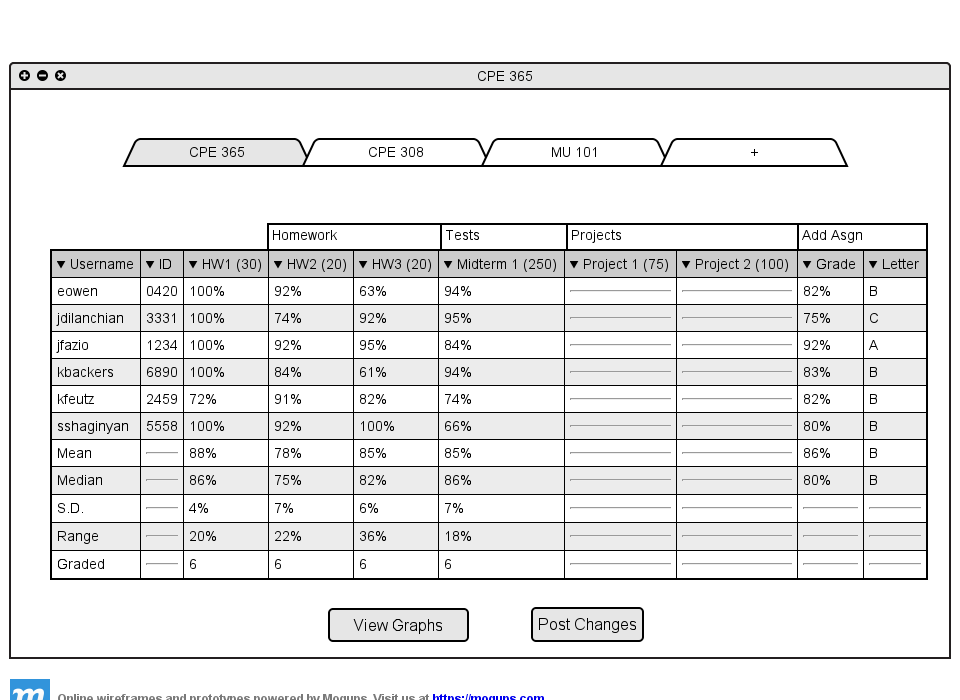
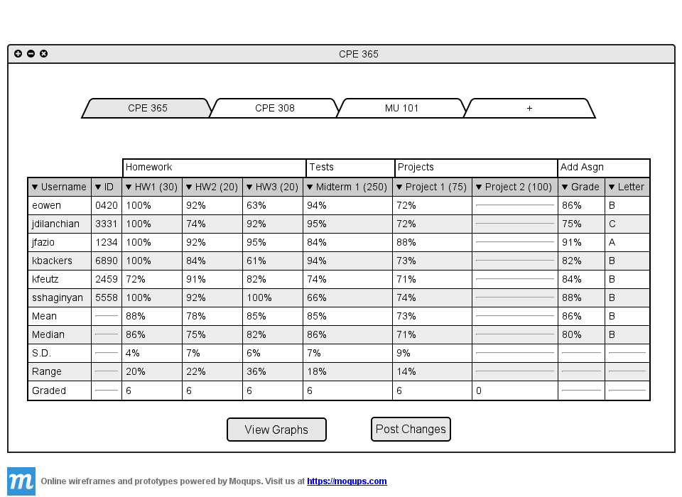
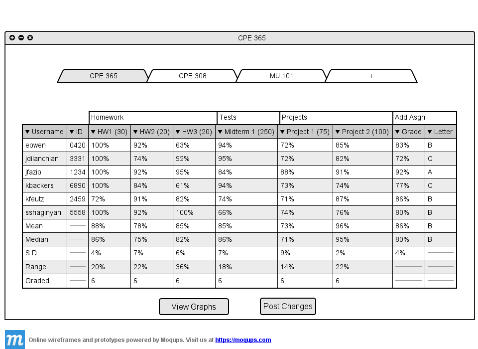

2.5.1 Enter in grades for student
The following figure assumes the teacher has already entered in grades up until the most recent assignment. The figure
also assumes the teacher has the columns, first name, last name, grade, and major hidden. To see how to hide columns
visit Section 2.5.3

Figure 2.5.1 A: Before entering in grades for Project 1.
When an assignment is not handed in electronically the teacher can manually enter in the grades by clicking
on the cell they wish to edit in the spreadsheet. The teacher has the option to enter the grades in as points
received or the grade as a percentage. To enter the grade as points out of the assignment total the teacher simply
types in the points without a percent sign. To enter in grades as a percentage the teacher types in the
grade with a percent sign.
The teacher enters eowen's Project 1 grade. The teacher enters in the Project 1
grade as points out of the total assignment value.
Figure 2.5.1 B: Entering in a Project 1 grade.
The teacher enters 55 for eowen's Project 1 grade. The maximum possible points for Project 1 is 75, indicated by
the parenthesized value in the column header. Right after the teacher enters in the grade as points
it is immediately transformed into a percentage that is calculated by points/total points for the assignment. (For the
purpose of the example the 55 remains, to show that the teacher enter in a point value.)
Since 55 is 73% of 75, 73% gets displayed. If the teacher wishes to view the spreadsheet as points rather than
percentages they can do so by changing the 'View Grade As' setting in the navigation menu (Explained in
Section 2.5.5.)
The teacher continues to fill in the students' grades for Project 1.

Figure 2.5.1 C: Entering in the rest of Project 1 grades.
Now all the grades for Project 1 are filled in. The final grades and statistics adjust accordingly. The teacher
now wants to fill in the grades for Project 2. The teacher enters these grades in as percentages rather than points.
This time when the teacher enters in a percentage, the number stays with the percent sign. The teacher enters in
85% for eowen, 82% for jdilanchian, and 91% for jfazio.
Figure 2.5.1 D: Entering Project 2 grades as percentages.
If the spreadsheet was set to display grades as points the percentages would have been converted into
points out of the total assignment. 85% converts to 64 points, 82% converts to 62 points and 91% converts
to 68 points. The teacher fills in the rest of the project 2 grades.

Figure 2.5.1 E: Spreadsheet fully filled in
The spreadsheet is now completed for all assignments assigned so far. The final grades have adjusted
accordingly.
Prev: Using The Spreadsheets
| Next: Sorting the Spreadsheet
| Up: Using the Spreadsheet
| Top: index